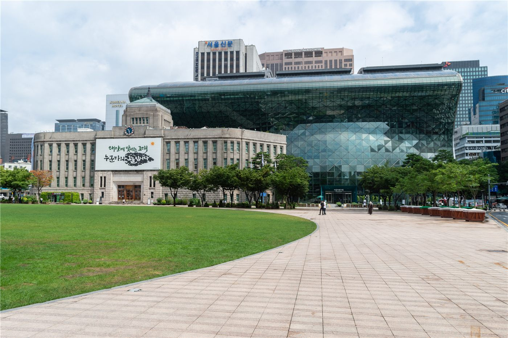

정청래·김민석, 대통령 나란히 마중…당·청 '갈등 봉합' 노력
여당 지도부인 정청래·김민석 인사가 대통령을 나란히 마중하며 당·청 사이의 갈등을 봉합하려는 움직임을 보였다. 협력 기조를 다지려는 신호로 읽힌다.
전금문 기자 · 2026.06.19
橋한국

경향신문은 정청래·김민석이 대통령을 나란히 마중하며 당과 청와대(대통령실) 사이의 갈등을 봉합하려는 노력을 보였다고 전했다. 국정 운영의 호흡을 맞추려는 시도다.
광고 문의 · 300×250협력 기조 다지기
집권 세력 내부의 당·정 관계는 국정 운영의 안정성과 직결된다. 정책 추진력을 높이려면 당과 대통령실의 손발이 맞아야 한다. 이번 마중은 그런 협력 의지를 대외적으로 드러낸 장면이다.
다만 정책 우선순위와 인사 등을 둘러싼 견해차는 언제든 다시 표면화될 수 있다. 봉합이 일시적 제스처에 그치지 않으려면 실질적 조율이 뒤따라야 한다는 지적이 나온다.
華橋時報는 정치 동향을 특정 진영의 시각이 아니라 국정 운영의 안정이라는 관점에서 전한다. 협력과 갈등의 양면을 균형 있게 다룬다.
출처·참고 (사실 확인용 — 본문은 직접 재작성)
· 경향신문 2026.06.18 '정청래·김민석, 이 대통령 나란히 마중…당·청 갈등 봉합 노력'
· 경향신문 2026.06.18 '정청래·김민석, 이 대통령 나란히 마중…당·청 갈등 봉합 노력'